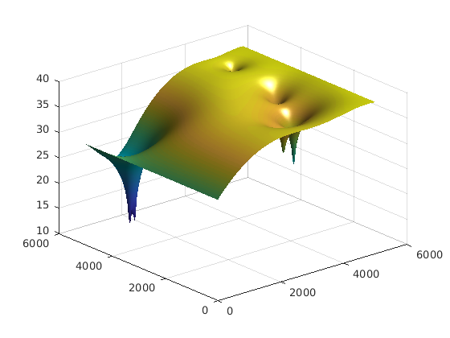
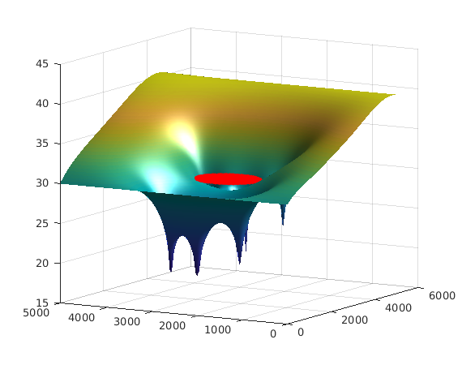

Pumping Optimization
| main | Tutorials | Functions | website |
Contents
Introduction
In this tutorial we will show one of the advantages of mSim, its ability to be used seamlessly within an optimization framework. This example is based on the following assumptions
Assumptions
- The flow is steady state
- The aquifer is confined
- The decision variables i.e. the pumping rates do not affect the conductance matrix
Problem description
The optimization problem is a typical dewatering problem: Find the minimum pumping amount that lowers the water table below a certain elevation.
Domain
Let's first create a simple example. Our example will be a rectangular domain of size 5000 m. The left and right boundaries are considered constant head with 30 and 40 m respectively, while the north and south boundary are impermeable. We will keep thing simple here. We will consider 6 wells around a site that we need to lower the water table.
If you have followed any of the other tutorials the following snippet should make sense.
dom.Geometry = 'Polygon';
dom.X = [0 0 5000 5000 0 nan];
dom.Y = [0 5000 5000 0 0 nan];
domain = CSGobj_v2(2,1,10,10,1);
domain = domain.readshapefile(dom);
Let's create the mesh. Since the well locations are unknown we will generate a relatively fine but uniform mesh. If the well locations were constant then we would probably refine the mesh around them.
meshOptions = msim_mesh_options; meshOptions.lc_gen = 50; domain.writegeo('dewater_example', meshOptions); gmsh_path='~/Downloads/gmsh-4.2.2-Linux64/bin/gmsh'; domain.runGmsh('dewater_example', gmsh_path, []); [p, MSH]=read_2D_Gmsh('dewater_example', 0, 0); Nel = size(MSH(3,1).elem(1,1).id, 1); % Number of 2D elements Np = size(p, 1); % NUmber of nodes
Info : Running '/home/giorgk/Downloads/gmsh-4.2.2-Linux64/bin/gmsh dewater_example.geo -2' [Gmsh 4.2.2, 1 node, max. 1 thread] Info : Started on Mon Mar 25 16:40:25 2019 Info : Reading 'dewater_example.geo'... Info : Done reading 'dewater_example.geo' Info : Meshing 1D... Info : Meshing curve 1 (Line) Info : Meshing curve 2 (Line) Info : Meshing curve 3 (Line) Info : Meshing curve 4 (Line) Info : Done meshing 1D (0.000806 s) Info : Meshing 2D... Info : Meshing surface 1 (Plane, Delaunay) Info : Done meshing 2D (0.318902 s) Info : 13374 vertices 26750 elements Info : Writing 'dewater_example.msh'... Info : Done writing 'dewater_example.msh' Info : Stopped on Mon Mar 25 16:40:25 2019 Reading points... Reading Elements...
Hydraulic properties, Fluxes, Boundary conditions etc.
Since the focus of this example is the optimization we will keep everything just simple. That means uniform hydaulic conductivity and recharge and no complex boundary conditions.
Hydraulic Conductivity
Assuming a uniform hydraulic conductivity and thickness we can define transmisivity on the nodes.
Tnd=100*ones(Np, 1); %m^2/day.
Fluxes
Groundwater recharge is the only flux considered in this example with rate equal to 4mm/day
FLUX(1,1).id = [1:Nel]'; FLUX(1,1).val = 0.0004*ones(Nel,1); FLUX(1,1).dim = 2; %is the dimension of the elements FLUX(1,1).el_type = 'triangle'; %This is the type of element FLUX(1,1).el_order = 'linear'; %This is the element order FLUX(1,1).id_el = 1; %This is the index of the elements in the MSH.elem array
Another flux type are the wells. However their locations and rates will be determined via optimization. However we will add 6 wells in the model with random locations and rates that will be used as placeholders when we setup the optimization.
random_wells = [500 + 4000*rand(6,2) -(500 + 1500*rand(6,1))];
When the mesh of the domain was constructed the well locations where not taken into account. To assign the well fluxes in the mesh we will first identify in which elements the wells are laying and then assign the rate to the nodes of that triangle proportionaly with the distance from the nodes.
FLUX_point = [];
We will need the element barycenters, and initialize a weight vector
cc = Calc_Barycenters(p, MSH(3,1).elem(1,1).id); weights = zeros(size(MSH(3).elem.id,2), 1);
Then for each well we find the distances from the element barycenter, and starting from the closest one we check if the well is in that element. This is actually always the case so the loop breaks after jj = 1. The we compute the weights as the inverse distance from the element nodes.
for ii = 1:size(random_wells, 1) dst = sqrt((random_wells(ii,1) - cc(:,1)).^2 + (random_wells(ii,2) - cc(:,2)).^2); [c, d] = sort(dst); for jj = 1:length(d) in = inpolygon(random_wells(ii,1), random_wells(ii,2), p(MSH(3).elem.id(d(jj),:),1), p(MSH(3).elem.id(d(jj),:),2)); if in node_distances = sqrt((random_wells(ii,1) - p(MSH(3).elem.id(d(jj),:),1)).^2 + (random_wells(ii,2) - p(MSH(3).elem.id(d(jj),:),2)).^2); if any(node_distances < 0.001) weights(:,1) = 0; weights(node_distances < 0.001,:) = 1; else weights = (1./node_distances)./sum(1./node_distances); end FLUX_point = [FLUX_point; MSH(3).elem.id(d(jj),:)', random_wells(ii,3)* weights]; break end end end
Boundary conditions
The nodes of the left side of the domain where x = 0, will be assigned a hydraulic head equal to 30 m.
id_left = find(p(:,1) < 0.1); CH = [id_left 30*ones(length(id_left),1)];
The nodes of the right side (x = 5000) will be assigned a hydraulic head equal to 40 m
id_right = find(p(:,1) > 4999.9); CH = [CH; id_right 40*ones(length(id_right),1)];
Assemble, solve, visualize
The following is the standard code to assemble the system matrices, solve the groundwater flow equation and visualize.
simopt.dim=2; simopt.el_type='triangle'; simopt.el_order='linear'; [Kglo, H]= Assemble_LHS(p, MSH(3,1).elem(1,1).id, Tnd , CH, [], simopt); F_rch= Assemble_RHS(length(H), p, MSH, FLUX); F_wells = sparse(FLUX_point(:,1),1,FLUX_point(:,2),length(H),1); Fall = F_rch + F_wells; Hsol = solve_system(Kglo, H, Fall); clf trisurf(MSH(3,1).elem(1,1).id, p(:,1), p(:,2), Hsol(1:size(p,1)),'edgecolor','none', ... 'FaceColor','interp','FaceLighting','phong'); camlight right view(-40, 30); drawnow
Getting ready for the optimization
In general any optimization problem that involves the simulation of groundwater flow in fact will solve a linear system of equations in the form KH = F where in our case K is the conductance matrix, F represent the fluxes and boundary conditions and H is the unknown vector. In this example we have made some assumptions so that the desicion variables do not affect the matrix K. Therefore we can assemble the matrix K once and use it during the optimization. However we can further optimize the procedure.
Let's first delve into the system_solve function. The following snippet partitions the system to account for the boundary conditions.
id_cnst=find(~isnan(H)); id_var=find(isnan(H)); KK=Kglo(id_var,id_var); GG=Kglo(id_var,id_cnst); DD=H(id_cnst); B=Fall(id_var)-GG*DD;
Then the actual system to solve is KK*H = B, which we can solve using the / matlab operator (lets repeat this many times to calculate an avarege solution time)
for ii = 1:200 tic KK\B; t1(ii,1) = toc; end
An alternative we be to decompose the matrix KK as:
[L,U,P,Q,R] = lu(KK);
and then solve (Again repeat multiple times to get an average solve time)
for ii = 1:200 tic; Q * (U \ (L \ (P * (R \ B)))); t2(ii,1) = toc; end disp('K\B: sum, mean time in sec:') disp([sum(t1) mean(t1)]) disp('Q * (U \ (L \ (P * (R \ B)))): sum, mean time in sec:') disp([sum(t2) mean(t2)])
K\B: sum, mean time in sec:
3.8728 0.0194
Q * (U \ (L \ (P * (R \ B)))): sum, mean time in sec:
0.2032 0.0010
We can see than the latter is about 5% of the time when we use the first way of solving the system.
This maybe trivial for a single run but very important during an optimization that requires 1000s of runs.
Objective function
First we will create the objective function. The following code should be put in a separete file named as dewater_obj_fun.m
The code penalizes the wells when they are inside to the dewatering area or far away from it. It also penalizes the solutions that violate the dewatering constraint, which is the groundwater elevation should be less than 30 m.
%{ function y = dewater_obj_fun(x, L, U, GGDD, H, F, id_var, p, trimesh, cc, id_cnstr) % x is a vector 6*3 of the decision variables. % we reshape it so that they correspond to X Y Q x = reshape(x, 6,3); % distance from center dst = sqrt((x(:,1) - 2500).^2 + (x(:,2) - 2500).^2); % find if the wells violate the location contraints id_in = dst < 650; id_out = dst > 2000; if any([id_in id_out]) y = 100000*(sum(650-dst(id_in)) + sum(dst(id_out) - 2000)); else FLUX_point = []; weights = zeros(size(trimesh,2), 1); for ii = 1:size(x, 1) dst = sqrt((x(ii,1) - cc(:,1)).^2 + (x(ii,2) - cc(:,2)).^2); [~, d] = sort(dst); for jj = 1:length(d) in = inpolygon(x(ii,1), x(ii,2), p(trimesh(d(jj),:),1), p(trimesh(d(jj),:),2)); if in node_distances = sqrt((x(ii,1) - p(trimesh(d(jj),:),1)).^2 + (x(ii,2) - p(trimesh(d(jj),:),2)).^2); if any(node_distances < 0.001) weights(:,1) = 0; weights(node_distances < 0.001,:) = 1; else weights = (1./node_distances)./sum(1./node_distances); end FLUX_point = [FLUX_point; trimesh(d(jj),:)', x(ii,3)* weights]; break end end end Fall = F + sparse(FLUX_point(:,1),1,FLUX_point(:,2), length(H), 1); B = Fall(id_var)-GGDD; X = Q * (U \ (L \ (P * (R \ B)))); H(id_var,1) = X; H_constraint = H(id_cnstr); id_violate = H_constraint > 30; if any(id_violate) y = 100*sum((id_violate)) + abs(sum(x(:,3))); else y = abs(sum(x(:,3))); end end %}
Note that this objective function requires more inputs that just the vector of the decision variables. However the optimization algorithm requires that the functions have just one input. According to matlab documentations we can create an anonymous objective function with one input and all other required inputs as parameters at creation time.
id_cnstr = find(sqrt((p(:,1)-2500).^2 + (p(:,2)-2500).^2) < 650); f = @(x)dewater_obj_fun(x, L, U, P, R, Q, GG*DD, H, F_rch, id_var, p, MSH(3).elem.id, cc, id_cnstr);
Run optimization
Now we can run the optimization
We will define lower and upper limits for the decision variables and some optimization options. Finally we create a starting point that satisfy all the contraints and start the optimization.
lb = [500*ones(12,1); -5100*ones(6,1)]; ub = [4500*ones(12,1); 0*ones(6,1)]; fopt = optimoptions('fsolve','Display','final',... % 'StepTolerance',1e-15,'MaxFunctionEvaluations',6000,... 'DiffMinChange',10);%,'Algorithm','levenberg-marquardt' xinit = [1000; 1000; 1000; 4000; 4000; 4000; ... 1500; 2500; 3500;1500; 2500; 3500; -5000*ones(6,1)]; [x, fval, exitflag, output] = fmincon(f, xinit, [], [], [], [], lb, ub, [],fopt);
Warning: You have passed FSOLVE options to FMINCON. FMINCON will use the common options and ignore the FSOLVE options that do not apply. To avoid this warning, convert the FSOLVE options using OPTIMOPTIONS. Local minimum possible. Constraints satisfied. fmincon stopped because the size of the current step is less than the selected value of the step size tolerance and constraints are satisfied to within the default value of the constraint tolerance.
Finally we can plot the results. As we did before we have to assemble the FLUX vector.
FLUX_point = []; weights = zeros(size(MSH(3).elem.id,2), 1); x = reshape(x, 6,3); for ii = 1:size(x, 1) dst = sqrt((x(ii,1) - cc(:,1)).^2 + (x(ii,2) - cc(:,2)).^2); [~, d] = sort(dst); for jj = 1:length(d) in = inpolygon(x(ii,1), x(ii,2), p(MSH(3).elem.id(d(jj),:),1), p(MSH(3).elem.id(d(jj),:),2)); if in node_distances = sqrt((x(ii,1) - p(MSH(3).elem.id(d(jj),:),1)).^2 + (x(ii,2) - p(MSH(3).elem.id(d(jj),:),2)).^2); if any(node_distances < 0.001) weights(:,1) = 0; weights(node_distances < 0.001,:) = 1; else weights = (1./node_distances)./sum(1./node_distances); end FLUX_point = [FLUX_point; MSH(3).elem.id(d(jj),:)', x(ii,3)* weights]; break end end end
and solve once more using the optimum solution
Hopt = solve_system(Kglo, H, F_rch + sparse(FLUX_point(:,1),1,FLUX_point(:,2),length(H),1)); clf trisurf(MSH(3,1).elem(1,1).id, p(:,1), p(:,2), Hopt(1:size(p,1)),'edgecolor','none', ... 'FaceColor','interp','FaceLighting','phong'); camlight right view(-60, 10); hold on plot3(p(id_cnstr,1),p(id_cnstr,2),30*ones(length(id_cnstr),1),'.r') drawnow;
We can see that indeed the water table around the area is lower than the constraint.
A tough question to answer: Is this indeed the optimum solution for this problem? Is this an appropriate algorithm to use?
References
We have used the above technique to the following papers:
- Mantoglou, A., and G. Kourakos (2013), An Efficient Simulation-Optimization Coupling for Management of Coastal Aquifers, American Geophysical Union, Fall meeting 2013, San Francisco, California, USA.
- Kourakos G., and A. Mantoglou (2015) An efficient Simulation-Optimization Coupling for Management of Coastal Aquifers. Hydrogeology Journal 23(6),1167 – 1179, doi:10.1007/s10040-015-1293-7.